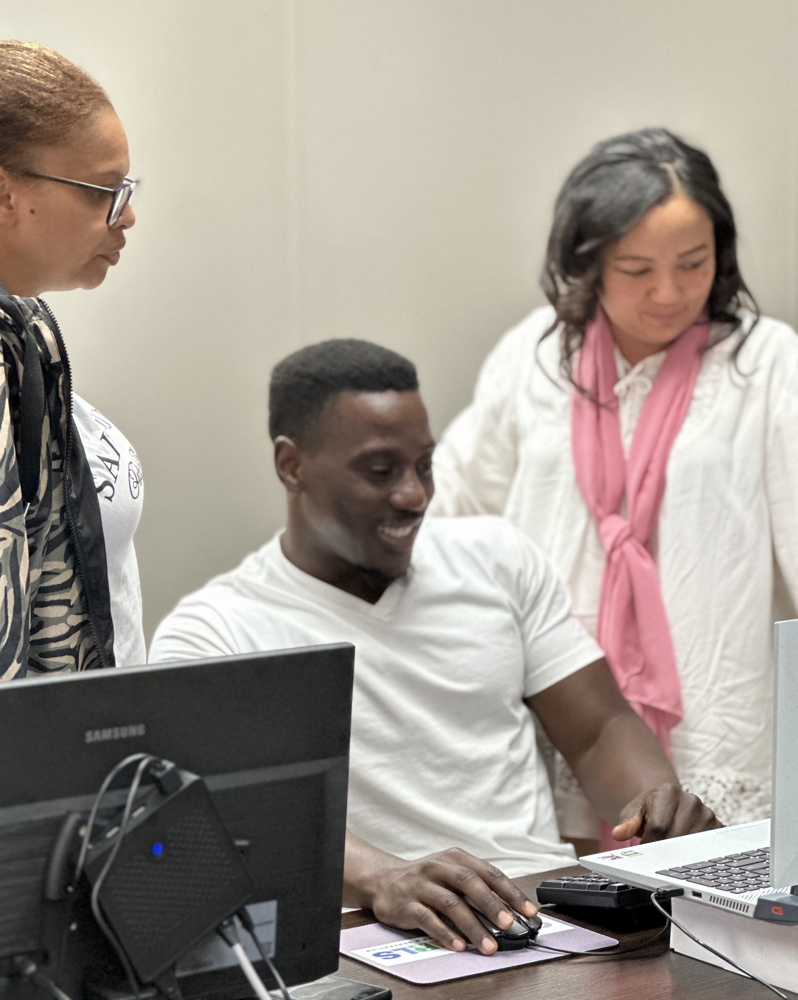
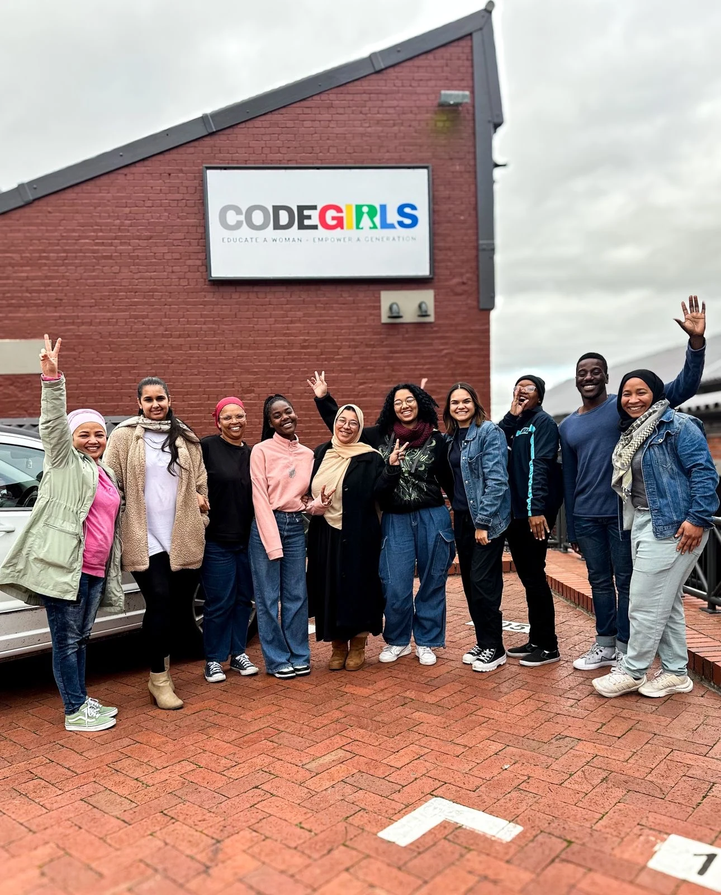
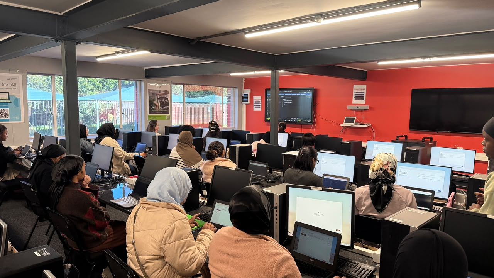

Purpose-led · People-centred · Built to deliver.
Big ambition.
Real opportunity.
Lasting impact.
We bring funders and delivery partners together to create practical routes into digital skills, work and enterprise. Our programmes are designed to be measured, improved and grown

Programme design & delivery
*Digital skills & development
*Work integrated learning
*Programme design & delivery
*Digital skills & development
*Work integrated learning
*Programme design & delivery
*Digital skills & development
*Work integrated learning
*Programme design & delivery
*Digital skills & development
*Work integrated learning
*01 / The AFPPM approach
Opportunity needs more
than an idea.
It needs people who deliver.
AF Project & Programme Management brings structure, care and accountability to ambitious work. We connect programme design with hands-on delivery, so investment reaches people and progress can be measured.
02 / Projects with purpose
Where potential becomes progress.
Explore our projects
CodeGirls South Africa
From a small pilot to multiple cohorts of women building skills, graduating as full stack developers and stepping into employment.
Explore our projects
The Excellence Hub
The next chapter after theory. A dedicated environment for practical delivery, mentorship and experience on real projects.
Explore our projectsProgramme design & delivery
Clear plans, coordinated teams and practical oversight to take programmes from an initial brief through to delivery.
Skills & pathways to work
Technical learning, business skills and workplace readiness connected to practical experience and employment pathways.
Monitoring, evaluation & learning
Useful indicators, progress reporting and workshops that help organisations understand results and improve delivery.
Enterprise & digital development
Accelerator delivery, SME digitalisation and website development that help organisations build their next chapter.
03 / What we do
From the first plan to the work that matters.
Founder Abdeyah Fredericks created AFPPM to connect disciplined programme management with meaningful opportunity. Today, that vision is taking shape through skills development, practical learning and partnerships across borders.
Discuss your programmeSuccess stories / From students to colleagues
Learning that became a place in the team.
Explore the pathway to workChantal, Naafiah, Carol and Sa-eedah began as CodeGirls students and are now employed at AFPPM. Their journeys show that the connection between training and work is already taking shape.
Chantal / Technical training
From learning to teaching.
Chantal progressed from CodeGirls student to a technical trainer at AFPPM. She now helps the next cohort develop the skills she once joined the programme to learn.
Naafiah / Programme support
From participant to team member.
Naafiah's journey has taken her from CodeGirls into employment with AFPPM, contributing to programme support and the work that helps learning happen.
Carol / Training assistance
Helping others take the next step.
After joining CodeGirls as a student, Carol became a training assistant at AFPPM. Her role now places her alongside learners as they build their own skills.
Sa-eedah / Training assistance
A learner becomes a colleague.
Sa-eedah progressed from CodeGirls student to a training assistant at AFPPM, contributing to the delivery of training for the women following her.
These employment journeys began before the Excellence Hub. They provide an existing foundation for the pathway AFPPM is building through structured work integrated learning and placement.
05 / Better, together
In partnership / collaboration with
Relationships that bring people, expertise and possibility together.


The next chapter starts with a conversation